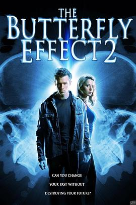

蝴蝶效应2 / The Butterfly Effect 2
又名：El efecto mariposa 2
没有第一部精彩了，情节起伏不够给力
作品信息
| 导演 | 约翰·R·莱昂耐迪 |
| 编剧 | Michael D. Weiss |
| 主演 | 埃里克·里夫利 / 埃莉卡·杜兰斯 / 达斯汀·米利甘 / 吉娜·赫尔顿 / 林赛·麦克斯维尔 |
| 类型 | 剧情 / 科幻 / 惊悚 |
| 制片国家/地区 | 美国 |
| 语言 | 英语 |
| 上映日期 | 2006-10-10(美国) |
| 片长 | 92分钟 |
| IMDb | tt0457297 |
说过什么
2014-02-13 00:06:47
看过 · 时间来自广播，短评来自标记页
没有第一部精彩了，情节起伏不够给力
最后一次看到是 2026-08-01T11:07:14+10:00 · 豆瓣原页